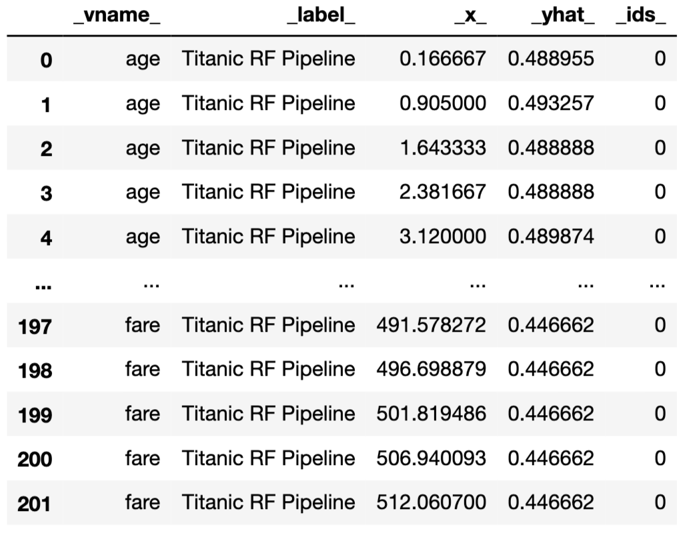

17 Partial-dependence Profiles
17.1 Introduction
In this chapter, we focus on partial-dependence (PD) plots, sometimes also called PD profiles. They were introduced in the context of gradient boosting machines (GBM) by Friedman (2000). For many years, PD profiles went unnoticed in the shadow of GBM. However, in recent years, they have become very popular and are available in many data-science-oriented packages like DALEX (Biecek 2018), iml (Molnar, Bischl, and Casalicchio 2018), pdp (Greenwell 2017) or PDPbox (Jiangchun 2018).
The general idea underlying the construction of PD profiles is to show how does the expected value of model prediction behave as a function of a selected explanatory variable. For a single model, one can construct an overall PD profile by using all observations from a dataset, or several profiles for sub-groups of the observations. Comparison of sub-group-specific profiles may provide important insight into, for instance, the stability of the model’s predictions.
PD profiles are also useful for comparisons of different models:
- Agreement between profiles for different models is reassuring. Some models are more flexible than others. If PD profiles for models, which differ with respect to flexibility, are similar, we can treat it as a piece of evidence that the more flexible model is not overfitting and that the models capture the same relationship.
- Disagreement between profiles may suggest a way to improve a model. If a PD profile of a simpler, more interpretable model disagrees with a profile of a flexible model, this may suggest a variable transformation that can be used to improve the interpretable model. For example, if a random forest model indicates a non-linear relationship between the dependent variable and an explanatory variable, then a suitable transformation of the explanatory variable may improve the fit or performance of a linear-regression model.
- Evaluation of model performance at boundaries. Models are known to have different behaviour at the boundaries of the possible range of a dependent variable, i.e., for the largest or the lowest values. For instance, random forest models are known to shrink predictions towards the average, whereas support-vector machines are known for a larger variance at edges. Comparison of PD profiles may help to understand the differences in models’ behaviour at boundaries.
17.2 Intuition
To show how does the expected value of model prediction behave as a function of a selected explanatory variable, the average of a set of individual ceteris-paribus (CP) profiles can be used. Recall that a CP profile (see Chapter 10) shows the dependence of an instance-level prediction on an explanatory variable. A PD profile is estimated by the mean of the CP profiles for all instances (observations) from a dataset.
Note that, for additive models, CP profiles are parallel. In particular, they have got the same shape. Consequently, the mean retains the shape, while offering a more precise estimate. However, for models that, for instance, include interactions, CP profiles may not be parallel. In that case, the mean may not necessarily correspond to the shape of any particular profile. Nevertheless, it can still offer a summary of how (in general) do the model’s predictions depend on changes in a given explanatory variable.
The left-hand-side panel of Figure 17.1 presents CP profiles for the explanatory variable age in the random forest model titanic_rf (see Section 4.2.2) for 25 randomly selected instances (observations) from the Titanic dataset (see Section 4.1). Note that the profiles are not parallel, indicating non-additive effects of explanatory variables. The right-hand-side panel shows the mean of the CP profiles, which offers an estimate of the PD profile. Clearly, the shape of the PD profile does not capture, for instance, the shape of the group of five CP profiles shown at the top of the panel. Nevertheless, it does seem to reflect the fact that the majority of CP profiles suggest a substantial drop in the predicted probability of survival for the ages between 2 and 18.

Figure 17.1: Ceteris-paribus (CP) and partial-dependence (PD) profiles for the random forest model for 25 randomly selected observations from the Titanic dataset. Left-hand-side plot: CP profiles for age; blue dots indicate the age and the corresponding prediction for the selected observations. Right-hand-side plot: CP profiles (grey lines) and the corresponding PD profile (blue line).
17.3 Method
17.3.1 Partial-dependence profiles
The value of a PD profile for model \(f()\) and explanatory variable \(X^j\) at \(z\) is defined as follows:
\[\begin{equation} g_{PD}^{j}(z) = E_{\underline{X}^{-j}}\{f(X^{j|=z})\}. \tag{17.1} \end{equation}\]
Thus, it is the expected value of the model predictions when \(X^j\) is fixed at \(z\) over the (marginal) distribution of \(\underline{X}^{-j}\), i.e., over the joint distribution of all explanatory variables other than \(X^j\). Or, in other words, it is the expected value of the CP profile for \(X^j\), defined in (10.1), over the distribution of \(\underline{X}^{-j}\).
Usually, we do not know the true distribution of \(\underline{X}^{-j}\). We can estimate it, however, by the empirical distribution of \(n\), say, observations available in a training dataset. This leads to the use of the mean of CP profiles for \(X^j\) as an estimator of the PD profile:
\[\begin{equation} \hat g_{PD}^{j}(z) = \frac{1}{n} \sum_{i=1}^{n} f(\underline{x}_i^{j|=z}). \tag{17.2} \end{equation}\]
17.3.2 Clustered partial-dependence profiles
As it has been already mentioned, the mean of CP profiles is a good summary if the profiles are parallel. If they are not parallel, the average may not adequately represent the shape of a subset of profiles. To deal with this issue, one can consider clustering the profiles and calculating the mean separately for each cluster. To cluster the CP profiles, one may use standard methods like K-means or hierarchical clustering. The similarities between observations can be calculated based on the Euclidean distance between CP profiles.
Figure 17.2 illustrates an application of that approach to the random forest model titanic_rf (see Section 4.2.2) for 100 randomly selected instances (observations) from the Titanic dataset. The CP profiles for the age variable are marked in grey. It can be noted that they could be split into three clusters: one for a group of passengers with a substantial drop in the predicted survival probability for ages below 18 (with the average represented by the blue line), one with an almost linear decrease of the probability over the age (with the average represented by the red line), and one with almost constant predicted probability (with the average represented by the green line). The plot itself does not allow to identify the variables that may be linked with these clusters, but the additional exploratory analysis could be performed for this purpose.

Figure 17.2: Clustered partial-dependence profiles for age for the random forest model for 100 randomly selected observations from the Titanic dataset. Grey lines indicate ceteris-paribus profiles that are clustered into three groups with the average profiles indicated by the blue, green, and red lines.
17.3.3 Grouped partial-dependence profiles
It may happen that we can identify an explanatory variable that influences the shape of CP profiles for the explanatory variable of interest. The most obvious situation is when a model includes an interaction between the variable and another one. In that case, a natural approach is to investigate the PD profiles for the variable of interest within the groups of observations defined by the variable involved in the interaction.
Figure 17.3 illustrates an application of the approach to the random forest model titanic_rf (see Section 4.2.2) for 100 randomly selected instances (observations) from the Titanic dataset. The CP profiles for the explanatory-variable age are marked in grey. The red and blue lines present the PD profiles for females and males, respectively. The gender-specifc averages have different shapes: the predicted survival probability for females is more stable across different ages, as compared to males. Thus, the PD profiles clearly indicate an interaction between age and gender.

Figure 17.3: Partial-dependence profiles for two genders for the random forest model for 100 randomly selected observations from the Titanic dataset. Grey lines indicate ceteris-paribus profiles for age.
17.3.4 Contrastive partial-dependence profiles
Comparison of clustered or grouped PD profiles for a single model may provide important insight into, for instance, the stability of the model’s predictions. PD profiles can also be compared between different models.
Figure 17.4 presents PD profiles for age for the random forest model (see Section 4.2.2) and the logistic regression model with splines for the Titanic data (see Section 4.2.2). The profiles are similar with respect to a general relationship between age and the predicted probability of survival (the younger the passenger, the higher chance of survival). However, the profile for the random forest model is flatter. The difference between both models is the largest at the left edge of the age scale. This pattern can be seen as expected because random forest models, in general, shrink predictions towards the average and they are not very good for extrapolation outside the range of values observed in the training dataset.

Figure 17.4: Partial-dependence profiles for age for the random forest (green line) and logistic regression (blue line) models for the Titanic dataset.
17.4 Example: apartment-prices data
In this section, we use PD profiles to evaluate performance of the random forest model (see Section 4.5.2) for the apartment-prices dataset (see Section 4.4). Recall that the goal is to predict the price per square meter of an apartment. In our illustration, we focus on two explanatory variables, surface and construction year. We consider the predictions for the training dataset apartments.
17.4.1 Partial-dependence profiles
Figure 17.5 presents CP profiles (grey lines) for 100 randomly-selected apartments together with the estimated PD profile (blue line) for construction year and surface.
PD profile for surface suggests an approximately linear relationship between the explanatory variable and the predicted price. On the other hand, PD profile for construction year is U-shaped: the predicted price is the highest for the very new and very old apartments. Note that, while the data were simulated, they were generated to reflect the effect of a lower quality of building materials used in rapid housing construction after the World War II.

Figure 17.5: Ceteris-paribus and partial-dependence profiles for construction year and surface for 100 randomly-selected apartments for the random forest model for the apartment-prices dataset.
17.4.2 Clustered partial-dependence profiles
Almost all CP profiles for construction year, presented in Figure 17.5, seem to be U-shaped. The same shape is observed for the PD profile. One might want to confirm that the shape is, indeed, common for all the observations. The left-hand-side panel of Figure 17.6 presents clustered PD profiles for construction year for three clusters derived from the CP profiles presented in Figure 17.5. The three PD profiles differ slightly in the size of the oscillations at the edges, but they all are U-shaped. Thus, we could conclude that the overall PD profile adequately captures the shape of the CP profiles. Or, put differently, there is little evidence that there might be any strong interaction between year of construction and any other variable in the model. Similar conclusions can be drawn for the CP and PD profiles for surface, presented in the right-hand-side panel of Figure 17.6.

Figure 17.6: Ceteris-paribus (grey lines) and partial-dependence profiles (red, green, and blue lines) for three clusters for 100 randomly-selected apartments for the random forest model for the apartment-prices dataset. Left-hand-side panel: profiles for construction year. Right-hand-side panel: profiles for surface.
17.4.3 Grouped partial-dependence profiles
One of the categorical explanatory variables in the apartment prices dataset is district. We may want to investigate whether the relationship between the model’s predictions and construction year and surface is similar for all districts. Toward this aim, we can use grouped PD profiles, for groups of apartments defined by districts.
Figure 17.7 shows PD profiles for construction year (left-hand-side panel) and surface (right-hand-side panel) for each district. Several observations are worth making. First, profiles for apartments in “Srodmiescie” (Downtown) are clearly much higher than for other districts. Second, the profiles are roughly parallel, indicating that the effects of construction year and surface are similar for each level of district. Third, the profiles appear to form three clusters, i.e., “Srodmiescie” (Downtown), three districts close to “Srodmiescie” (namely “Mokotow”, “Ochota”, and “Ursynow”), and the six remaining districts.

Figure 17.7: Partial-dependence profiles for separate districts for the random forest model for the apartment-prices dataset. Left-hand-side panel: profiles for construction year. Right-hand-side panel: profiles for surface.
17.4.4 Contrastive partial-dependence profiles
One of the main challenges in predictive modelling is to avoid overfitting. The issue is particularly important for flexible models, such as random forest models.
Figure 17.8 presents PD profiles for construction year (left-hand-side panel) and surface (right-hand-side panel) for the linear-regression model (see Section 4.5.1) and the random forest model. Several observations are worth making. The linear-regression model cannot, of course, accommodate the non-monotonic relationship between construction year and the price per square meter. However, for surface, both models support a linear relationship, though the slope of the line resulting from the linear regression is steeper. This may be seen as an expected difference, given that random forest models yield predictions that are shrunk towards the mean. Overall, we could cautiously conclude that there is not much evidence for overfitting of the more flexible random forest model.
Note that the non-monotonic relationship between construction year and the price per square meter might be the reason why the explanatory variable was found not to be important in the model in Section 16.6.
In Section 4.5.4, we mentioned that a proper model exploration may suggest a way to construct a model with improved performance, as compared to the random forest and linear-regression models. In this respect, it is worth observing that the profiles in Figure 17.8 suggest that both models miss some aspects of the data. In particular, the linear-regression model does not capture the U-shaped relationship between construction year and the price. On the other hand, the effect of surface on the apartment price seems to be underestimated by the random forest model. Hence, one could conclude that, by addressing the issues, one could improve either of the models, possibly with an improvement in predictive performance.

Figure 17.8: Partial-dependence profiles for the linear-regression and random forest models for the apartment-prices dataset. Left-hand-side panel: profiles for construction year. Right-hand-side panel: profiles for surface.
17.5 Pros and cons
PD profiles, presented in this chapter, offer a simple way to summarize the effect of a particular explanatory variable on the dependent variable. They are easy to explain and intuitive. They can be obtained for sub-groups of observations and compared across different models. For these reasons, they have gained in popularity and have been implemented in various software packages, including R and Python.
Given that the PD profiles are averages of CP profiles, they inherit the limitations of the latter. In particular, as CP profiles are problematic for correlated explanatory variables (see Section 10.5), PD profiles are also not suitable for that case, as they may offer a crude and potentially misleading summarization. An approach to deal with this issue will be discussed in the next chapter.
17.6 Code snippets for R
In this section, we present the DALEX package for R, which covers the methods presented in this chapter. It uses the ingredients package with various implementations of variable profiles. Similar functions can be found in packages pdp (Greenwell 2017), ALEPlots (Apley 2018), and iml (Molnar, Bischl, and Casalicchio 2018).
For illustration purposes, we use the random forest model titanic_rf (see Section 4.2.2) for the Titanic data. Recall that the model has been developed to predict the probability of survival from the sinking of the Titanic.
We first retrieve the version of the titanic data with imputed missing values and the titanic_rf model-object via the archivist hooks, as listed in Section 4.2.7. Then we construct the explainer for the model by using function explain() from the DALEX package (see Section 4.2.6). Note that, beforehand, we have got to load the randomForest package, as the model was fitted by using function randomForest() from this package (see Section 4.2.2) and it is important to have the corresponding predict() function available.
library("DALEX")
library("randomForest")
titanic_imputed <- archivist::aread("pbiecek/models/27e5c")
titanic_rf <- archivist::aread("pbiecek/models/4e0fc")
explainer_rf <- DALEX::explain(model = titanic_rf,
data = titanic_imputed[, -9],
y = titanic_imputed$survived,
label = "Random Forest")17.6.1 Partial-dependence profiles
The function that allows computation of PD profiles in the DALEX package is model_profile(). The only required argument is explainer, which indicates the explainer-object (obtained with the help of the explain() function, see Section 4.2.6) for the model to be explained. The other useful arguments include:
variables, a character vector providing the names of the explanatory variables, for which the profile is to be computed; by default,variables = NULL, in which case computations are performed for all numerical variables included in the model.N, the number of (randomly sampled) observations that are to be used for the calculation of the PD profiles (N = 100by default);N = NULLimplies the use of the entire dataset included in the explainer-object.type, the type of the PD profile, with values"partial"(default),"conditional", and"accumulated".variable_type, a character string indicating whether calculations should be performed only for"numerical"(continuous) explanatory variables (default) or only for"categorical"variables.groups, the name of the explanatory variable that will be used to group profiles, withgroups = NULLby default (in which case no grouping of profiles is applied).k, the number of clusters to be created with the help of thehclust()function, withk = NULLused by default and implying no clustering.
In the example below, we calculate the PD profile for age by applying the model_profile() function to the explainer-object for the random forest model. By default, the profile is based on 100 randomly selected observations.
The resulting object of class model_profile contains the PD profile for age. By applying the plot() function to the object, we obtain a plot of the PD profile. Had we not used the variables argument, we would have obtained separate plots of PD profiles for all continuous explanatory variables.
The resulting plot for age (not shown) corresponds to the one presented in Figure 17.4. It may slightly differ, as the two plots are based on different sets of (randomly selected) 100 observations from the Titanic dataset.
A PD profile can be plotted on top of CP profiles. This is a very useful feature if we want to check how well the former captures the latter. It is worth noting that, apart from the PD profile, the object created by the model_profile() function also contains the CP profiles for the selected observations and all explanatory variables included in the model. By specifying the argument geom = "profiles" in the plot() function, we add the CP profiles to the plot of the PD profile.
plot(pdp_rf, geom = "profiles") +
ggtitle("Ceteris-paribus and partial-dependence profiles for age") The resulting plot (not shown) is essentially the same as the one shown in the right-hand-side panel of Figure 17.1.
17.6.2 Clustered partial-dependence profiles
To calculate clustered PD profiles, we have got to cluster the CP profiles. Toward this aim, we use the k argument of the model_profile() function that specifies the number of clusters that are to be formed by the hclust() function. In the code below, we specify that three clusters are to be formed for profiles for age.
The clustered PD profiles can be plotted on top of the CP profiles by using the geom = "profiles" argument in the plot() function.
The resulting plot (not shown) resembles the one shown for the random forest model in Figure 17.2. The only difference may stem from the fact that the two plots are based on a different set of (randomly selected) 100 observations from the Titanic dataset.
17.6.3 Grouped partial-dependence profiles
The model_profile() function admits the groups argument that allows constructing PD profiles for groups of observations defined by the levels of an explanatory variable. In the example below, we use the argument to obtain PD profiles for age, while grouping them by gender.
The grouped PD profiles can be plotted on top of the CP profiles by using the geom = "profiles" argument in the plot() function.
plot(pdp_rf_gender, geom = "profiles") +
ggtitle("Partial-dependence profiles for age, grouped by gender") The resulting plot (not shown) resembles the one shown in Figure 17.3.
17.6.4 Contrastive partial-dependence profiles
It may be of interest to compare PD profiles for several models. We will compare the random forest model with the linear-regression model titanic_lmr (see Section 4.2.1). For the latter, we first have got to load it via the archivist hook, as listed in Section 4.5.6. Then we construct the explainer for the model by using function explain(). Note that we first load the rms package, as the model was fitted by using function lmr() from this package (see Section 4.2.1) and it is important to have the corresponding predict() function available. Finally, we apply the model_profile() function to compute CP profiles and the PD profile for age based on 100 randomly-selected observations from the Titanic dataset. We also repeat the calculations of the profiles for the random forest model.
library("rms")
titanic_lmr <- archivist::aread("pbiecek/models/58b24")
explainer_lmr <- DALEX::explain(model = titanic_lmr,
data = titanic_imputed[, -9],
y = titanic_imputed$survived,
label = "Logistic Regression")
pdp_lmr <- model_profile(explainer = explainer_lmr, variables = "age")
pdp_rf <- model_profile(explainer = explainer_rf, variables = "age")To overlay the PD profiles for age for the two models in a single plot, we apply the plot() function to the model_profile-class objects for the two models that contain the profiles for age.
As a result, the profiles are plotted in a single plot. The resulting graph (not shown) is essentially the same as the one presented in Figure 17.4, with a possible difference due to the use of a different set of (randomly selected) 100 observations from the Titanic dataset.
17.7 Code snippets for Python
In this section, we use the dalex library for Python. The package covers all methods presented in this chapter. It is available on pip and GitHub. Similar functions can be found in library PDPbox (Jiangchun 2018).
For illustration purposes, we use the titanic_rf random forest model for the Titanic data developed in Section 4.3.2. Recall that the model is developed to predict the probability of survival for passengers of Titanic.
In the first step, we create an explainer-object that will provide a uniform interface for the predictive model. We use the Explainer() constructor for this purpose.
The function that allows calculations of PD profiles is model_profile(). By default, it calculates profiles for all continuous variables. The other useful arguments include:
variables, astr,list,np.ndarrayorpd.Seriesproviding the names of the explanatory variables, for which the profile is to be computed; by default computations are performed for all numerical variables included in the model.N, the number of (randomly sampled) observations that are to be used for the calculation of the PD profiles (N = 300by default);N = Noneimplies the use of the entire dataset included in the explainer-object.B, the number of times (by default, 10) the entire procedure is to be repeated.type, the type of the PD profile, with values'partial'(default),'conditional', and'accumulated'.variable_type, a character string indicating whether calculations should be performed only for'numerical'(continuous) explanatory variables (default) or only for'categorical'variables.groups, the name or list of names of the explanatory variable that will be used to group profiles, withgroups = Noneby default (in which case no grouping of profiles is applied).
In the example below, we calculate the PD profiles for age and fare by applying the model_profile() function to the explainer-object for the random forest model. By default, the profile is based on 300 randomly selected observations.

The results can be visualised by applying the plot() method. Figure 17.9 presents the created plot.
Figure 17.9: Partial-dependence profiles for age and fare for the random forest model for the Titanic data, obtained by using the plot() method in Python.
A PD profile can be plotted on top of CP profiles. This is a very useful feature if we want to check how well does the former capture the latter. By specifying the argument geom = 'profiles' in the plot() method, we add the CP profiles to the plot of the PD profile.
The left-hand-side panel of the resulting plot (see Figure 17.10) is essentially the same as the one shown in the right-hand-side panel of Figure 17.1.

Figure 17.10: Partial-dependence profiles (blue) with corresponding ceteris-paribus profiles (grey) for age and fare for the random forest model for the Titanic data, obtained by using the plot() method in Python.
By default, the model_profile() function computes the PD profiles only for continuous explanatory variables. To obtain the profiles for categorical variables, in the code that follows we use the argument variable_type='categorical'. Additionally, in the call to the plot() method we indicate that we want to display the profiles only to variables class and gender.
pd_rf = titanic_rf_exp.model_profile( variable_type = 'categorical')
pd_rf.plot(variables = ['gender', 'class'])The resulting plot is presented in Figure 17.11.

Figure 17.11: Partial-dependence profiles for class and gender for the random forest model for the Titanic data, obtained by using the plot() method in Python.
17.7.1 Grouped partial-dependence profiles
The model_profile() function admits the groups argument that allows constructing PD profiles for groups of observations defined by the levels of an explanatory variable. In the code below, we use the argument to compute the profiles for age and fare, while grouping them by class. Subsequently, we use the plot() method to obtain a graphical presentation of the results. The resulting plot is presented in Figure 17.12.
Figure 17.12: Partial-dependence profiles for age and fare, grouped by class, for the random forest model for the Titanic data, obtained by using the plot() method in Python.
17.7.2 Contrastive partial-dependence profiles
It may be of interest to compare PD profiles for several models. As an illustration, we will compare the random forest model with the logistic regression model titanic_lr (see Section 4.3.1). First, we have got to compute to the profiles for both models by using the model_profile() function.
Subsequently, we apply the plot() method to plot the profiles. Note that, in the code below, we use the variables argument to limit the display to variable age and fare.
As a result, the profiles for age and fare are presented in a single plot. The resulting graph is presented in Figure 17.13).
Figure 17.13: Partial-dependence profiles for age and fare for the random forest model and the logistic regression model for the Titanic data.
References
Apley, Dan. 2018. ALEPlot: Accumulated Local Effects (Ale) Plots and Partial Dependence (Pd) Plots. https://CRAN.R-project.org/package=ALEPlot.
Biecek, Przemyslaw. 2018. “DALEX: Explainers for complex predictive models in R.” Journal of Machine Learning Research 19 (84): 1–5. http://jmlr.org/papers/v19/18-416.html.
Friedman, Jerome H. 2000. “Greedy Function Approximation: A Gradient Boosting Machine.” Annals of Statistics 29: 1189–1232.
Greenwell, Brandon M. 2017. “Pdp: An R Package for Constructing Partial Dependence Plots.” The R Journal 9 (1): 421–36. https://journal.r-project.org/archive/2017/RJ-2017-016/index.html.
Jiangchun, Li. 2018. Python Partial Dependence Plot Toolbox. https://pypi.org/project/PDPbox/.
Molnar, Christoph, Bernd Bischl, and Giuseppe Casalicchio. 2018. “iml: An R package for Interpretable Machine Learning.” Journal of Open Source Software 3 (26): 786. https://doi.org/10.21105/joss.00786.